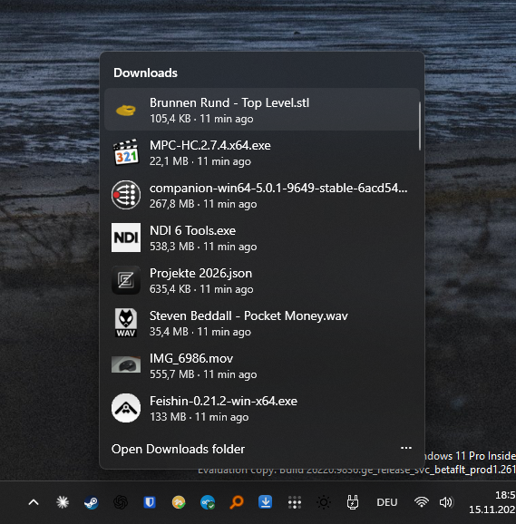
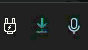
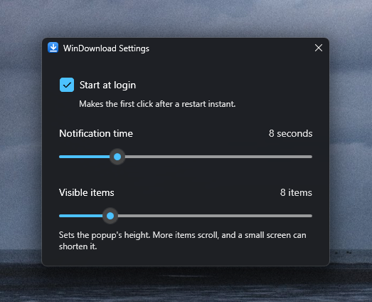

Downloads in Tray
A Windows 11 alternative to the macOS Dock Downloads stack. Click the pinned taskbar icon to see your recent downloads, newest first, and click one to open it.
Needs the .NET 10 Desktop Runtime; setup offers it if missing.Features
- One click to your downloadsPin the icon to the taskbar and click it to see your recent downloads, newest first. Arrow keys and Enter work too, and Esc or clicking elsewhere closes it.
- Live progressRunning downloads from Chrome, Edge and Firefox appear at the top with a moving bar, the size so far and the speed. When one finishes, the popup comes back without taking focus, with the file marked.
- Drag and dropDrag any row into a folder or app. Explorer moves it within a drive and copies it across drives.
- NotificationsA small notice fades in above the tray when something new lands in Downloads. Click it to open the file. It stays quiet during full-screen apps and when Windows says not to interrupt.
- Tray iconLeft-click toggles the popup, right-click offers Show downloads, Open Downloads folder, Settings and Quit. The arrow animates while a download is running, and a monochrome variant matches light or dark taskbars.
Screenshots


